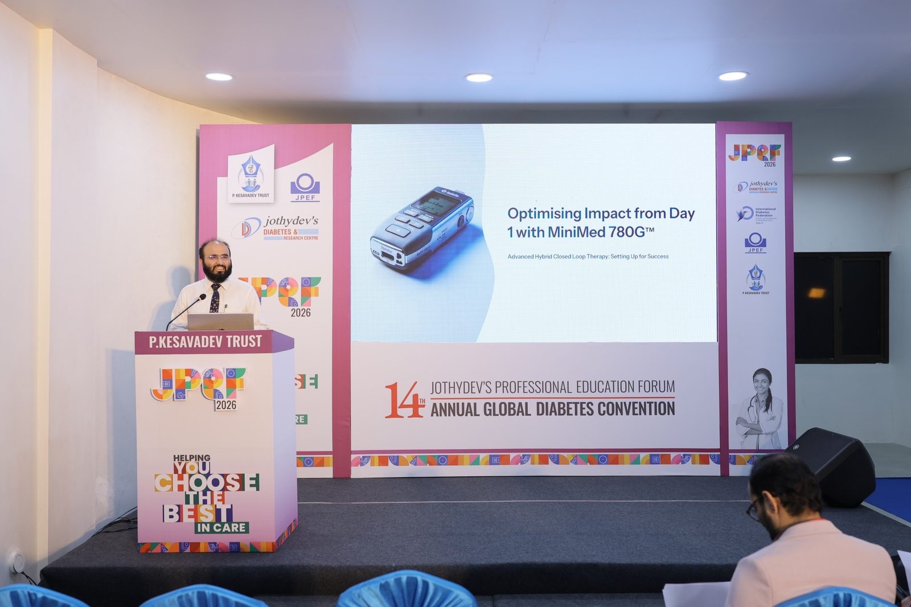
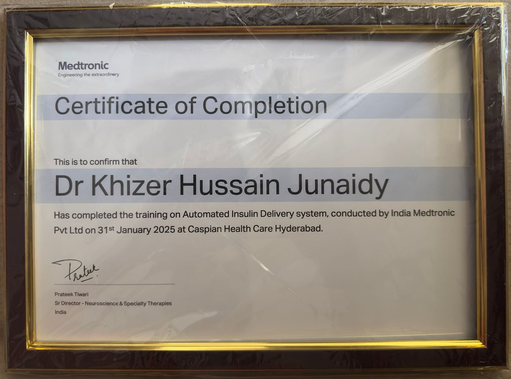
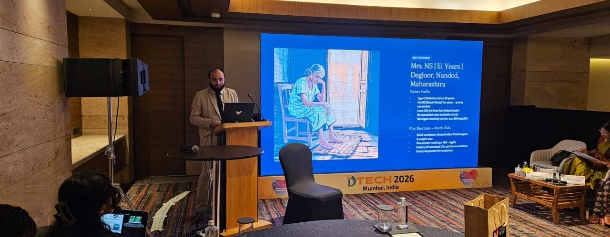
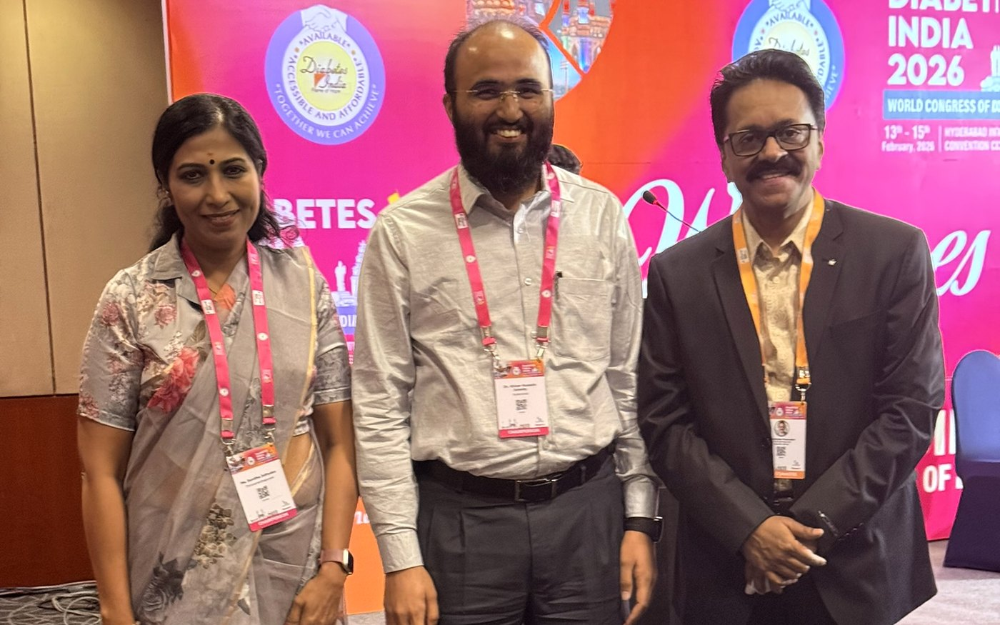
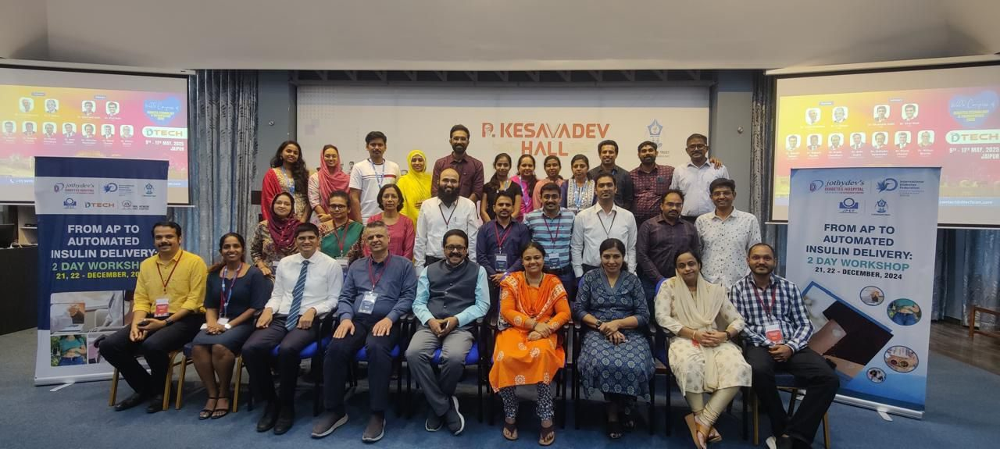
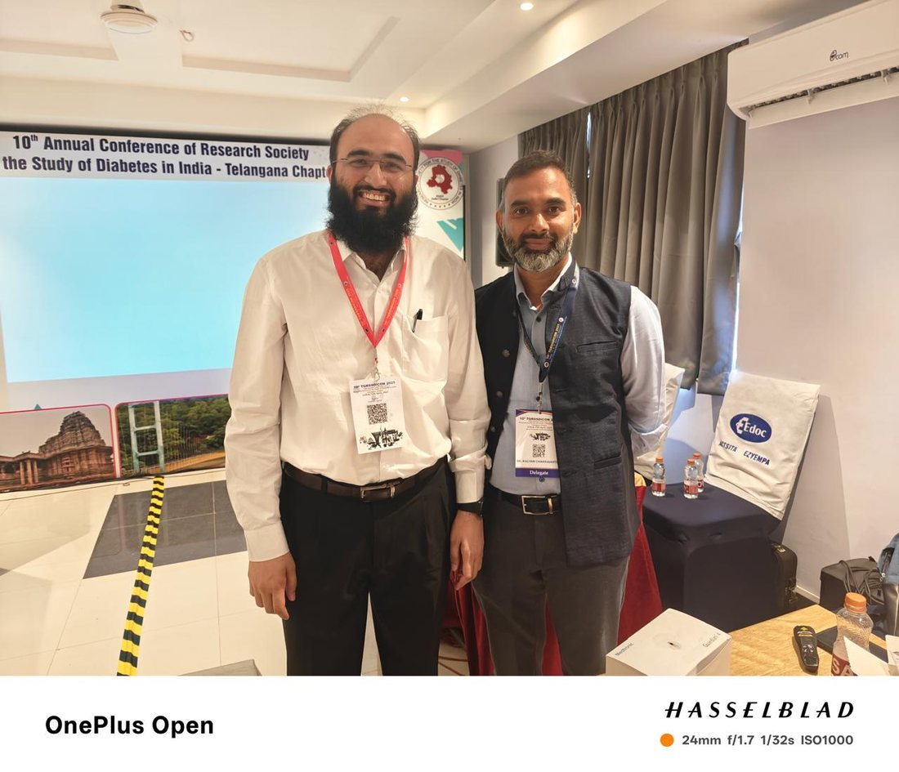
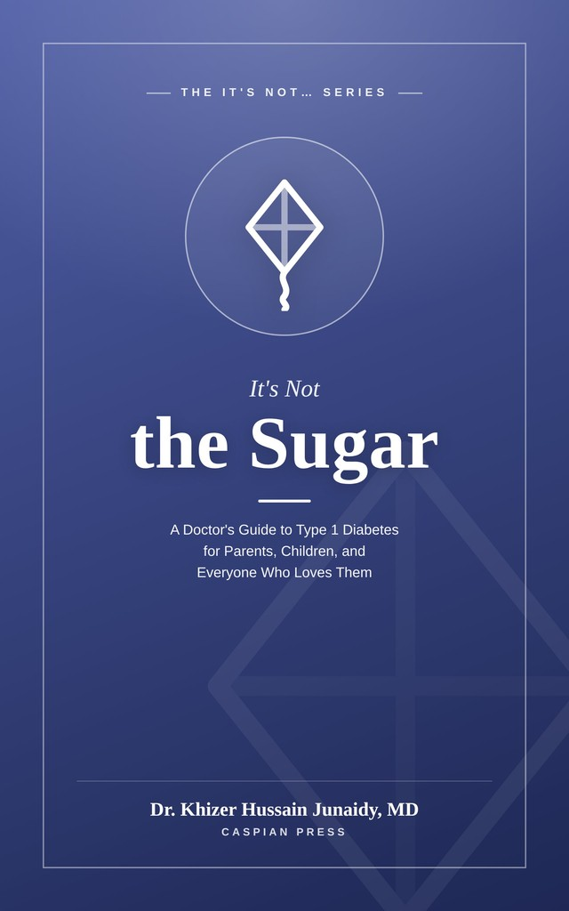

Sleep through
the night again.
There is now an insulin pump that checks your child's glucose every five minutes and adjusts her insulin by itself, through the night, during exams, at a birthday party, in the middle of a cricket match.
It is called the MiniMed™ 780G. It is not a cure, and it is not magic. But for many families in Hyderabad it has been the difference between managing type 1 diabetes and being ruled by it.
Assessed, fitted, programmed and followed up by Dr. Khizer Hussain Junaidy, Consultant Diabetologist, at Caspian Healthcare, Vijay Nagar Colony, Hyderabad. Reg. No. TSMC/FMR/04937.

- Medtronic-certifiedFormal AID system training, 31 Jan 2025
- National faculty on AIDJPEF 2026 · DTech 2026 · Medtronic AID Symposium
- Available in IndiaSince March 2022 · ages 7–80 · 4-year warranty
- One clinic, one teamCaspian Healthcare, Hyderabad, start to follow-up
You are not tired because you are
a bad parent. You are tired because
you have been doing the work of
an organ.
A healthy pancreas makes a decision about insulin roughly every few minutes, forever, without being asked. When it stops, somebody has to make those decisions instead. In most Indian homes, that somebody is a mother with an alarm clock.
- Check before bed. 214. Correct, or risk her waking high and ketotic?
- Wake up anyway. Check again. 96 and falling. Was the correction too much?
- Juice. Wait fifteen minutes. Check. Wait again.
- Rising now. Dawn phenomenon. Nothing you did wrong.
- School. Tiffin. Ratio. Bolus. Begin again on four hours of sleep.
An advanced hybrid closed loop system does not remove type 1 diabetes from your home. It removes most of that night.
What actually changes
Not the diagnosis. Not the carb counting. Not the need for a good doctor. What changes is how much of your day and night the disease is allowed to occupy.
Every decision is yours
- 4–6 injections a day, and 6–10 finger-pricks, more on sick days.
- Alarms at 1am, 3am, 5am. Somebody in the house is always half-awake.
- Basal insulin is a fixed guess made yesterday, for a body that grew today.
- Sport is a negotiation. Reduce insulin, carry glucose, hope.
- School trips and sleepovers get declined, not because she can't, but because you can't be there.
- Every biryani, every Eid, every birthday cake is a mathematics problem solved under social pressure.
- The fear of a low is constant, and it quietly shapes how high you are willing to let her run.
The system takes the night shift
- One needle every 2–3 days instead of roughly a hundred a month.
- Insulin is recalculated every five minutes, awake or asleep, by an algorithm that never gets tired.
- Nights get quieter. In one real-world analysis of over 8,000 users, night-time alerts fell by about 45% and uninterrupted sleep rose by roughly half an hour a night.
- Dawn phenomenon is handled while you sleep, it fell from 12.2% to 4.5% of mornings in that same dataset.
- Exercise gets a button. Set a temporary target before football; the system eases off insulin ahead of time.
- You can see her glucose from your office, up to five family members can follow on their phones.
- She can say yes. To the school trip, to the sleepover, to the swimming class. That is the part parents remember.
Figures above are from published real-world datasets of MiniMed™ 780G users and refer to recommended settings (glucose target 100 mg/dL, active insulin time 2 hours). Every child is different, and your child's results will be their own. Sources are listed at the foot of this page.
Twenty-four hours,
before and after
This is what a day looks like on a continuous glucose monitor. Drag the handle. The green band is 70–180 mg/dL, the range international guidelines ask us to keep children in for at least 70% of the day.
Illustrative traces drawn to represent a typical shift from multiple daily injections to advanced hybrid closed loop therapy. They are not a specific patient's data, and they are not a promise. Published real-world results in children are given below, with sources.
What the published data
actually says
These are peer-reviewed and real-world registry figures for the MiniMed™ 780G, chosen because they matter to a parent rather than because they sound impressive. Each one is referenced at the bottom of this page.
One honest caveat you should hold on to. Almost every headline number above assumes the pump is set the way it is meant to be set: glucose target 100 mg/dL and active insulin time 2 hours. Users on other settings sat around 7 percentage points lower. This is precisely why who programmes and reviews the pump matters more than the box itself.
How a closed loop
actually works
Three pieces of hardware and one algorithm. If you understand these four steps, you understand the whole system.
SmartGuard™ adjusts basal insulin every five minutes and can give an automatic correction dose up to every five minutes. That is up to 288 automated decisions in a single day.
-
1
A sensor reads her glucose, day and night
A tiny filament sits just under the skin, usually on the back of the arm or the abdomen, and measures glucose in the fluid between the cells. It sends a reading every five minutes to the pump and to your phone. It is inserted with a spring-loaded device in about a second, and it stays on for several days. No routine finger-pricks for calibration are needed with the current sensor, though you should always keep a glucometer at home.
-
2
The algorithm looks forward, not backward
This is the part that makes it different from an ordinary pump. SmartGuard™ does not just react to the number on the screen; it projects where glucose is heading over roughly the next half hour and acts before the number arrives. If she is drifting up, it quietly increases the background insulin, and can add an automatic correction dose. If she is drifting down, it reduces or suspends delivery altogether.
-
3
The pump delivers, in doses far smaller than a syringe can
A small device, about the size of an old pager, holds up to 300 units of rapid-acting insulin and pushes it through a very fine soft cannula under the skin. It can deliver in increments as small as 0.025 units, a precision no pen can reach, which is exactly why it suits small children. Only one type of insulin is used; the long-acting injection disappears completely.
-
4
You still announce meals, and you can watch from anywhere
Before she eats, someone tells the pump the carbohydrate. That is the “hybrid” in hybrid closed loop, and it is the honest limit of the technology today. Everything else is handled by the system: the background insulin, the overnight corrections, the dawn rise, the post-exercise dip. Meanwhile the readings stream to your phone, and up to five family members can follow along, whether you are at work, in Dubai, or asleep in the next room.
A normal Tuesday,
which is the whole point
Parents rarely ask about algorithms. They ask whether their daughter can go swimming, whether their son can sit an exam without going low, whether anyone at school will notice.
School
The pump sits in a pocket or a waistband pouch under the uniform. Most classmates never know it is there. Before lunch, she enters her carbs, which takes about fifteen seconds. If the class teacher is willing, we provide a one-page school letter with what to do for a high, a low, and who to call. If nobody at school can help, the remote-monitoring app means you can see the number from your desk and phone the school office.
Cricket, football, dance class
Roughly half an hour before activity, you set a temporary higher target. The system eases back on insulin in advance, which is the single most common reason exercise stops causing hypos. The pump can be disconnected briefly for a contact sport, or clipped inside a sports band and left on. After the match, it keeps managing the delayed drop that often comes hours later, the one that used to wake you at 2am.
Bath, rain, swimming
The pump itself is rated to withstand submersion in about 3.6 metres of water for up to 24 hours, so a downpour or a spilled glass is a non-event. For swimming, most families simply disconnect at the infusion site for up to an hour and reconnect afterwards. We teach you exactly how, and what to check when she comes out of the pool.
Sleepovers and school trips
This is the answer that changes families. Because the algorithm manages the night and you can see the readings on your phone, a night away from home stops being a risk assessment. We send the host family a short, plain-language card: what an alarm sounds like, what a low looks like, when to call. Most of the time it stays in the bag unused.
Biryani, Ramzan, Diwali sweets, Sunday at the in-laws'
Indian food is the hardest part of type 1 diabetes and nobody's algorithm has solved it. What the 780G does handle well is the long tail, the slow rise three hours after a rich meal that a single pen injection cannot chase. The system keeps correcting automatically through that whole period. There is also a Meal Detection feature that steps in when the carbohydrate estimate was too low, which is most of the time when a grandmother is serving. For fasting during Ramzan, the pump is genuinely easier to manage than injections, but it must be planned with your doctor before the month begins, not during it.
The pump is the easy part.
The programming is not.
Dr. Khizer Hussain Junaidy, MD
Consultant Diabetologist and Obesity Specialist
Founder and Medical Director, Caspian Healthcare
MBBS · MD (Pharmacology) · FID · CCEBDM · EPGCD
Reg. No. TSMC/FMR/04937
- Certified by India Medtronic on the Automated Insulin Delivery system, 31 January 2025, training conducted at Caspian Healthcare
- Invited Faculty, JPEF 2026, the 14th Annual Global Diabetes Convention, Trivandrum, speaking on Optimising Impact from Day 1 with MiniMed 780G, immediately before Dr. Jothydev Kesavadev's own talk in the same pump session
- Invited Faculty, DTech 2026, India's national diabetes technology conference, Grand Hyatt Mumbai, speaking on From Basal Bolus to AID in a Diabesity Practice
- Trained at Jothydev's Diabetes Research Institute, Trivandrum, an IDF Centre of Excellence, at the two-day From AP to Automated Insulin Delivery workshop, December 2024
- Associate facilitator, automated insulin delivery workshop, TGRSSDICON 2025, Warangal, where he also served as a Chairperson
- Speaker, Medtronic AID Symposium, Radisson Blu Banjara Hills, 17 August 2025, teaching insulin pump basics and 780G onboarding to physicians alongside consultant endocrinologist Dr. Kalyan Chakravarthy
- Advisory panel on insulin pump technology at the World Congress of Diabetes, DiabetesIndia 2026, Hyderabad, where he also chaired the D-GENius session and sat on the local organising committee
- MD in Pharmacology, one of the few Indian diabetes physicians formally trained in the science of how insulin behaves in the body; Fellowship in Diabetes; SCOPE certified in obesity management, World Obesity Federation
- 200+ invited talks, CMEs and workshops, and recipient of the Diabetes India Award, 2026
- Author of It's Not the Sugar: A Doctor's Guide to Type 1 Diabetes for Parents, Children, and Everyone Who Loves Them, out now on Kindle, and of The 4 Pillar Diabetes Plan
Two families can be given the same pump, from the same box, on the same day, and end up a world apart. The difference is the settings (the glucose target, the active insulin time, the carbohydrate ratios) and who is willing to review the downloaded data with you, week after week, until it is right.
I wore this pump myself, on my own body, before I ever put one on a child. I wanted to know what the alarms sound like at 3am, what the cannula feels like on the fourth day, and what it is like to sit through a wedding dinner with a device clipped to your waistband.
Dr. Khizer Hussain Junaidy
Dr. Khizer does not only fit these pumps, he teaches other doctors how to fit them. In August 2025 he was a speaker at the Medtronic AID Symposium in Hyderabad, covering pump basics and 780G onboarding. In May 2026 he was invited faculty at DTech 2026 in Mumbai, India's national diabetes technology conference. In July 2026 he presented Optimising Impact from Day 1 with MiniMed 780G at Jothydev's Professional Education Forum in Trivandrum, in the same session and immediately before Dr. Jothydev Kesavadev, the physician most associated with diabetes technology in India. He also sat on an insulin pump advisory panel at the World Congress of Diabetes in Hyderabad.
Disclosure, because you should not have to ask for it: Dr. Khizer has served as a paid speaker and advisory panel member for Medtronic and for other pharmaceutical and device companies. Caspian Healthcare is not a device distributor and takes no margin on the sale of any pump. The pump is purchased from the authorised distributor; the clinic's role is assessment, programming, training and follow-up.

Medtronic AID certification
Formal training on the Automated Insulin Delivery system, conducted by India Medtronic Pvt Ltd on 31 January 2025, held at Caspian Healthcare itself.
JPEF 2026, Trivandrum
Optimising Impact from Day 1 with MiniMed 780G. The talk immediately after his, in the same session, was given by Dr. Jothydev Kesavadev.

DTech 2026, Mumbai
Invited faculty at India's national diabetes technology conference. From Basal Bolus to AID in a Diabesity Practice, 10 May 2026.
Insulin pump advisory panel
World Congress of Diabetes, DiabetesIndia 2026, Hyderabad, where he also chaired the D-GENius session.

With Dr. Jothydev Kesavadev
With Dr. Jothydev Kesavadev and Dr. Sunitha Jothydev of Jothydev's Diabetes & Research Centre, Trivandrum, at the World Congress of Diabetes, DiabetesIndia 2026, Hyderabad.

“From AP to AID” workshop
Two days of hands-on automated insulin delivery training at Jothydev's Diabetes Research Institute, Trivandrum, an IDF Centre of Excellence, December 2024.

TGRSSDICON 2025, Warangal
Associate facilitator on the automated insulin delivery workshop, with consultant endocrinologist Dr. Kalyan Chakravarthy.
What this pump
does not do
Any clinic that sells you a device without this section is selling you something. Here is every limitation, stated plainly, so that you are delighted later rather than disappointed.
It is not a cure
Your child still has type 1 diabetes. The immune system has still destroyed the insulin-making cells. This is a very good tool for managing the condition, not an end to it, and any promise of a date for a cure should make you suspicious of the person making it.
It is not full autopilot
Carbohydrate must still be counted and entered before meals. That is what “hybrid” means. In one randomised study of adolescents, precise carb counting gave 80.3% time in range against 73.5% with simplified fixed amounts, so the counting still earns its keep.
Missing boluses still costs you
Yes, the system holds the line on days a bolus is forgotten. But in a study of 189 young people on automated systems, each additional missed or late meal bolus cost about 9.7 percentage points of time in range. The pump forgives; it does not replace.
It does not abolish hypoglycaemia
Time spent below 70 mg/dL stays low and safe on this system (around 2–3% in children, well within the recommended ceiling of 4%) but it does not reliably fall. In one paediatric trial it rose slightly. Glucose tablets stay in the schoolbag.
Ketosis can develop faster than on injections
This is the one real safety trade-off, and you must understand it. There is no long-acting insulin depot in the body. If the cannula kinks or the site fails, insulin stops arriving within minutes rather than hours. Every pump family keeps insulin pens, ketone strips and a written sick-day plan at home, permanently and without exception. We teach this on day one, not as an afterthought.
It is expensive, and largely unfunded in India
Indian health insurance policies pay for hospitalisation, not for outpatient devices, so in almost every case the pump and its consumables are paid for out of pocket. We would rather you hear this from us, in the first consultation, than discover it after you have set your heart on it.
It is something to wear, always
A device on the body, a sensor on the arm, sets to change every two to three days. Some children take to it instantly. Some teenagers hate the visibility of it for a few weeks. Both reactions are normal, and both should be part of the decision.
A child without a pump is not a neglected child
This matters more than anything else on this page. Excellent control is entirely possible on pens and a glucometer, and it was achieved for decades before any of this existed. Technology raises the ceiling and lowers the effort. It does not divide children into the loved and the unloved.
The failure questions,
answered first
Most clinics put this at the bottom. We put it near the top, because it is the section a frightened parent is actually looking for.
The cannula comes out at night
The pump detects that it cannot deliver against resistance and alarms, and the sensor will show glucose climbing regardless. You change the set, correct with a pen if glucose is already high, and check ketones. This is the single most common pump mishap, and it is the reason we drill the sick-day plan before you ever leave the clinic.
The pump stops working
You revert to the insulin pens you have been keeping ready, using the backup injection doses we write down for you at the start and review at every visit. Medtronic India's helpline runs 9:30 am to 9:30 pm, seven days a week, on 1800-209-6777, and the pump carries a four-year warranty with collection and return arranged at no cost.
Will it alarm all night?
Fewer alarms, not more. That is the whole design. In the 8,019-user real-world analysis, night-time alerts fell by roughly 45%. The alarms that remain are the ones that matter: a sensor that has failed, an occlusion, a low that needs a human. Alarm settings are tuned for your child at the follow-up visits, not left on factory defaults.
Can it give too much insulin?
The algorithm works within limits calculated from your child's own total daily dose, and it suspends delivery when it predicts a low. In the published paediatric studies of this system, including 61 children under seven followed for a year and the 98-child LENNY trial, there were no severe hypoglycaemia events. The maximum automatic correction is capped, and every dose is logged and reviewable.
The rule that keeps pump children safe
Unexplained high glucose on a pump means “check ketones and think about the site”, not “give another correction and wait”. Because there is no long-acting insulin in the body, an interruption of delivery for even one to two hours can push a child towards ketosis. Every family we start is taught this rule on day one, given a printed sick-day card for the fridge, and asked to demonstrate a set change and a ketone check before they go home.
What it costs,
and what it doesn't cover
This is the question every parent wants asked and almost nobody asks first. So let us go first.
| Item | Indicative cost in India | What you should know |
|---|---|---|
| The pump system, one time | ₹6.5 lakh | The current price at the time of writing, for the pump with its starter kit. Medtronic India publishes no list price, so ask us for a written quotation from the authorised distributor and check that it reflects the 5% GST rate. |
| Consumables, ongoing | ₹15,000 a month | Infusion sets, reservoirs and CGM sensors together. The sensors, not the sets, are the bulk of it. This is the figure to plan your household budget around. |
| Insulin | Often lower than before | A study at NIMS Hyderabad found pump users needed about 24 units a day against about 44 on injections, a real monthly saving that partly offsets the consumables. |
| Health insurance | Generally does not pay | Indian indemnity policies are triggered by hospitalisation. An outpatient device purchase does not qualify. Ask your insurer in writing before you assume anything. |
| EMI / financing | Usually available | Medtronic India has historically offered 0%-interest EMI schemes, and distributors commonly arrange credit-card EMI. Terms change, so we will help you confirm what is live when you are ready. |
| Warranty & service | 4 years on the pump | Transmitter warranty is 1 year. Sensors, batteries and accessories are excluded, and using non-Medtronic sets or reservoirs voids the warranty. Collection and return for warranty claims is arranged at no cost. |
| GST | 5% | Reduced from 12% on 22 September 2025 as part of the medical-device GST cut, worth confirming that any quotation reflects the lower rate. |
Free insulin in Hyderabad
The Centre of Excellence in Endocrinology at Gandhi Hospital, Secunderabad, has been dispensing free analogue insulin, including rapid-acting and long-acting, on a monthly basis, irrespective of financial background. If that is relevant to your family, we will help you find out whether you qualify. It changes the arithmetic considerably.
Our position on this
We will not pretend a pump is cost-effective by Indian health-economic standards, published analyses place it far above the usual national thresholds. If the honest answer for your family is a CGM first and a pump later, we will say so. Information is the foundation everything else rests on, and a part-time sensor often buys more safety per rupee than anything else you can do.
Pens and finger-pricks
versus a closed loop
| Multiple daily injections | MiniMed™ 780G closed loop | |
|---|---|---|
| Needles | 4–6 injections daily, plus finger-pricks | One cannula insertion every 2–3 days; a sensor every few days |
| Background insulin | One fixed long-acting dose decided in advance | Recalculated every 5 minutes against a live glucose reading |
| Overnight | Managed by whoever is awake | Managed by the algorithm; around 91% overnight time in range in real-world users |
| Dose precision | Half-unit steps at best | Increments as small as 0.025 units, a real advantage in small children |
| Corrections | Another injection, and a wait | Automatic, up to every 5 minutes, without anyone deciding |
| Exercise | Guesswork and glucose tablets | A temporary target set in advance; insulin eased off ahead of time |
| Remote visibility | A phone call to the school | Live readings shared with up to 5 family members |
| Carb counting | Required | Still required, this does not change |
| If insulin delivery stops | Long-acting insulin buys you hours | Ketones can rise within 1–2 hours; pens and ketone strips must always be kept |
| Upfront cost in India | Low | High, and generally not reimbursed |
| Learning | Familiar | A real training commitment for the first few weeks |
From first consultation
to a quiet night
Nobody walks in and walks out with a pump. This is the path we take at Caspian Healthcare, and it usually spans four to eight weeks.
- 01
Consultation and honest assessment
We review your child's current control, download whatever data you have, and talk about whether a pump is the right next step at all. For some families the answer is a CGM first. That conversation is free of any pressure to buy, because we are not the distributor.
- 02
Foundations: carb counting and CGM
If you are not already using a continuous glucose monitor and counting carbohydrate confidently, we build that first. A pump placed on shaky foundations underperforms, and the published data is unambiguous about it. This step is not a delay tactic; it is the step that determines your results.
- 03
Quotation, financing and paperwork
We connect you to the authorised Medtronic distributor for a written quotation, and help you work through EMI options and any insurance correspondence. You see the full cost, including a realistic monthly consumables figure, before you commit to anything.
- 04
Start day: settings, training, and a first set change
We programme the pump with your child's basal pattern, carbohydrate ratios, active insulin time and glucose target. You are trained on set changes, sensor insertion, alarms, the sick-day plan and the backup pen doses, and you demonstrate a set change and a ketone check before you leave.
- 05
The first two weeks: close contact
The algorithm learns from your child's total daily insulin, and settings need adjusting as it does. We review the downloaded data frequently in this period and stay reachable on WhatsApp for the questions that come at odd hours, because they will.
- 06
Optimisation: the step most clinics skip
Once things are stable we push towards the recommended settings: glucose target 100 mg/dL and active insulin time 2 hours. This is where the difference between a good result and an excellent one is made, and it is the difference between the headline published figures and the seven-percentage-point-lower ones.
- 07
Ongoing: every few months, forever
Children grow, puberty arrives, exam season changes everything. Settings that were perfect in March are wrong by September. Structured reviews with the downloaded data are what keep a pump working for years rather than months.
Every question a parent
has ever asked us
Written out in full, including the ones people feel awkward asking a doctor. If yours is not here, WhatsApp it to us and we will answer it, and add it to this page.
Your child, day to day
Does it hurt? My child is already terrified of needles.
The insertion of the cannula is a single quick prick with a spring-loaded inserter, and then it is done for two to three days. Most children describe it as easier than the injections they were having four to six times a day. A numbing cream applied twenty minutes beforehand takes care of the rest, and we routinely use it for the first several changes until confidence builds.
The soft cannula that stays under the skin is plastic, not metal, and children usually stop noticing it within a day.
Where does she wear it? Will people see it?
The pump is roughly the size of a small pager. It goes in a trouser pocket, a waistband clip, a leg band under a skirt or salwar, or a small pouch worn under the uniform. The tubing is thin and tucks away. The sensor sits on the back of the upper arm or the abdomen under clothing.
In practice, most classmates never realise it is there unless your child chooses to tell them, and many older children eventually do, because it turns out to be interesting rather than embarrassing.
Can she sleep with it on? What if she rolls over?
Yes. Children sleep with it every night. The tubing is long enough to allow normal movement, and most families tuck the pump into a pyjama pocket, a small pouch pinned to the mattress, or simply beside her under the sheet. Disconnection during sleep is uncommon, and if it does happen the pump alarms and the sensor shows glucose rising.
Can she bathe, swim, play in the rain?
The pump is rated as watertight to roughly 3.6 metres for up to 24 hours, so rain, spills and splashes are not an issue. For a bath or a swimming lesson, most families simply disconnect at the infusion site for up to an hour and reconnect afterwards. We teach the exact technique and what to check when she reconnects. For a full day at a water park, we plan it with you in advance.
Can he play cricket, football, or do martial arts?
Yes, and the pump usually makes sport easier, not harder. About half an hour before activity you set a temporary higher glucose target, and the system reduces insulin ahead of time, which is precisely the manoeuvre that is so hard to get right with a long-acting injection given twelve hours earlier.
For contact sports the pump can be disconnected for the duration, or worn in a protective sports band. The delayed post-exercise drop that used to wake you at 2am is also managed automatically.
What about school? No teacher there knows anything about diabetes.
This is the most common worry and it is a fair one. Three things help. First, the system manages the background insulin all day without anyone at school doing anything. Second, we provide a one-page school letter in plain language: what a high looks like, what a low looks like, what to give, and who to call. Third, remote monitoring means you can see her glucose on your own phone from your office, and pick up the phone if something needs doing.
What school staff must know is very small: if she looks unwell or says she feels low, give glucose and call the parent. That is it.
Can we see her sugars on our phone while we are at work?
Yes. Readings stream to a phone app, and up to five family members can follow along, a mother in the office, a father travelling, a grandmother at home, an aunt in Dubai. This single feature is the reason many parents say they finally stopped feeling that they had to be physically present to keep their child safe.
My child is 4. Isn't this only for older children?
In India the MiniMed™ 780G is indicated from age 7. In Europe the indication was extended down to age 2 in July 2025 on the strength of the LENNY trial in children aged 2–6. So for a four-year-old in India this is currently an off-label decision that must be discussed carefully, individually, and with full disclosure, not something to be waved through.
The published evidence in very young children is encouraging: in 61 children under seven, time in range rose from around 60% to the low seventies and stayed there for a year, with no severe hypoglycaemia or DKA. But the decision belongs to you, after a proper conversation. Come and have it with us.
He's fifteen and says he doesn't want a “device” on his body.
Take that seriously rather than overruling it. Adolescents who are pushed onto technology they did not choose tend to disengage from it, and a pump used badly performs worse than pens used well. What often works: let him meet the device before deciding, let him wear a CGM alone for a few weeks first, and let him be the one who talks to the doctor rather than being talked about.
It is also worth knowing that in real-world data the system holds up reasonably well on days when a teenager forgets a bolus entirely, around 76% time in range on recommended settings. For families with a teenager, that safety margin is often the strongest argument.
Will it affect his growth, weight, or puberty?
Better glucose control generally supports normal growth and puberty rather than hindering it, chronically high glucose is what impairs growth. Insulin does promote weight gain when doses are excessive, which is one more reason that careful settings and regular review matter. Growth is monitored at every visit as a matter of routine.
Safety and things going wrong
Is a pump more dangerous than injections?
There is one genuine trade-off and you should understand it precisely. On a pump there is no long-acting insulin reservoir in the body, only rapid-acting insulin, delivered in tiny amounts. If delivery is interrupted, glucose and ketones can rise within one to two hours, whereas on injections a long-acting dose would have carried your child for far longer.
Against that: in the published paediatric studies of this system there were no cases of severe hypoglycaemia or DKA, and where DKA has occurred with pumps generally it has been linked to infusion-set failures rather than to the algorithm. The mitigation is simple, and it is absolute: keep pens, keep ketone strips, and treat any unexplained high as a possible site failure until proven otherwise.
What if the pump fails in the middle of the night?
The pump alarms. You switch to the backup pen regimen we write down for you at the start and review at every visit, check ketones, and call us. Medtronic India's helpline runs 9:30 am to 9:30 pm, seven days a week, and the pump has a four-year warranty with collection and return arranged at no cost. No family we start leaves the clinic without a written backup plan on paper.
Can the pump deliver too much insulin by mistake?
The algorithm works inside limits derived from your child's own total daily dose, caps how much automatic correction it can give in a given window, and suspends delivery entirely when it predicts a low. Every dose it gives is logged and reviewable in the download. It is a safety-engineered medical device, not a general-purpose computer.
Do we still need to prick her fingers?
Far less, but not never. The current sensor does not require routine finger-prick calibration, and most days you will not use the glucometer at all. However, a blood glucose reading is needed to enter automated mode, and you should always confirm with a finger-prick when the sensor reading does not match how your child looks or feels. Symptoms beat sensors, always.
What happens during a sick day (fever, vomiting, a stomach bug)?
Sick days are when pump families need a plan most, and we give you a printed one for the fridge. In brief: never stop insulin, check glucose and ketones more often, use temporary basal rates, keep fluids going, and know the threshold at which you call us or go to hospital. We rehearse this with you before you ever need it.
Does it need electricity? What about a power cut?
The pump runs on a single AA battery, so power cuts are irrelevant to it. Keep a spare battery in the bag. Insulin storage during long outages is worth planning, unopened vials need refrigeration, though the vial in use is fine at room temperature for the labelled period.
MRI, X-rays, airport scanners, surgery?
The pump and sensor must be removed for an MRI or CT scan, and should not go through certain scanners: you request a hand inspection at airport security and carry a doctor's letter, which we provide. For planned surgery the anaesthetic and surgical team must be told well in advance, and we will write to them. None of this is difficult; all of it needs to be arranged rather than discovered on the day.
Cost, availability and paperwork
How much does it actually cost?
₹6.5 lakh for the pump system as a one-time purchase, and about ₹15,000 a month for consumables: infusion sets, reservoirs and sensors together, of which the sensors are by far the largest part.
Two things to hold on to. First, Medtronic India does not publish list prices, so any number you find online should be treated with suspicion, and the only figure that binds anyone is a written quotation from the authorised distributor, which we will help you obtain. Second, GST on medical devices was reduced to 5% in September 2025, so check that the quotation you are given reflects the lower rate.
Set against that, pump users generally need less insulin than they did on injections, which claws back part of the monthly cost.
Will my health insurance pay for it?
Almost certainly not, and we would rather say so plainly. Indian indemnity health policies pay for hospitalisation. An insulin pump is an outpatient durable device and does not generate a claimable hospitalisation event, and insurers' own literature is silent on device reimbursement. Ask your insurer in writing before assuming otherwise, and if you get a favourable answer, please tell us, because it would be genuinely useful information for other families.
Is there any government scheme or charity help in Telangana?
There is no pump package under Ayushman Bharat that we have been able to identify. There are two things worth knowing. First, the Centre of Excellence in Endocrinology at Gandhi Hospital, Secunderabad, has been dispensing free analogue insulin monthly, irrespective of financial background, which can materially reduce your recurring costs whichever route you take. Second, a published study from NIMS Hyderabad describes insulin pumps supplied free of cost under a state government health programme to eligible patients. The programme is not named in that paper and we cannot confirm its current status, but if cost is the barrier for your family, it is worth our making enquiries together.
Nationally, a small number of hospital-linked charitable programmes have donated pumps to underprivileged children. These are one-off initiatives rather than a route you can rely on.
Is it even available in India? What about service and spares?
Yes. The MiniMed™ 780G was launched in India in March 2022 and is indicated here for ages 7 to 80. There is an authorised distributor network in Hyderabad and Telangana, a national helpline on 1800-209-6777 open 9:30 am to 9:30 pm seven days a week, and a four-year pump warranty with collection and return arranged at no cost.
One warning worth stating: do not buy a pump from abroad or second-hand. The warranty terminates on transfer between users, you lose Indian service and consumables supply, and you would be depending on a device with no local support behind it.
Can we pay in instalments?
Usually. Medtronic India has historically offered 0%-interest EMI schemes on pump therapy, and distributors commonly arrange credit-card EMI over three to twelve months. Terms change, so we confirm what is actually live at the time you are buying rather than quoting you something from an old brochure.
What is included, and what will I have to keep buying?
A starter kit typically includes the pump and an initial supply of sensors, infusion sets and reservoirs. After that you buy consumables continuously: infusion sets every two to three days (extended-wear sets lasting seven days are also available), reservoirs with each set change, and sensors every several days. Batteries and accessories are not covered by warranty. Using non-Medtronic sets or reservoirs voids the warranty, so budget for genuine consumables.
Living in India with a pump
What about biryani, sweets, and food at relatives' houses?
Indian food is genuinely the hardest part of type 1 diabetes, and no algorithm has solved it. What this system handles well is the long, slow rise that follows a rich meal for three or four hours, the part a single pen injection simply cannot chase. It keeps correcting automatically through the whole period, and the Meal Detection feature steps in when the carbohydrate estimate was too low, which is most of the time when somebody's grandmother is serving.
You will still count carbs, and we will teach you to count Indian portions rather than exchanging recipes from an American textbook.
Can she fast during Ramzan?
Fasting with type 1 diabetes always requires a pre-planned, individualised decision made with your doctor before the month starts, not a question asked on the second day. Where fasting is appropriate, a pump is considerably easier to manage than injections, because basal rates can be reshaped for the fasting hours and adjusted from the wrist rather than requiring a different long-acting dose.
Please book a consultation several weeks before Ramzan if this matters to your family. It is a conversation, not a form.
Travel, flights, and taking it abroad?
Entirely doable. Carry a doctor's letter (we provide one), keep all insulin and supplies in hand baggage, carry double what you think you need, request hand inspection at security rather than putting the pump through certain scanners, and plan basal adjustments for a significant time-zone change. Heat is worth thinking about on Indian summer travel, insulin should not sit in a car in May.
Will this affect his marriage prospects?
Families ask this quietly and it deserves a direct answer. Type 1 diabetes is a manageable chronic condition, not a barrier to marriage, career, or having children, and good control makes that case far better than poor control does. A young person whose glucose sits in range most of the day, who sleeps properly, and who is visibly in charge of their own health presents very differently from one who is not.
Honesty with a prospective family, and a doctor who can explain the condition properly to them, tends to settle the matter. Dr. Khizer is willing to have that conversation with families when asked.
Exams, stress and board season?
Stress hormones push glucose up, and exam season is where months of good control often unravel. This is exactly the situation where an algorithm correcting every five minutes outperforms a fixed regimen decided in advance. Practically: an exam-time settings review, a temporary target if hypoglycaemia during a paper is the fear, and a letter for the examination authority where one is needed.
We live outside Hyderabad. Can you still look after us?
Yes. Pump follow-up is largely data-driven, the reports upload from your phone and can be reviewed remotely, and settings adjustments can be discussed over the phone between visits. What does need to happen in person is the initial assessment and the start-day training. Many families come to Hyderabad for those and then continue remotely, coming in periodically.
What if we try it and hate it? Can we go back to pens?
Yes, at any time, and it is not a failure. We write down a full pen regimen for your child at the start precisely so that reverting is always safe and immediate. Some families use the pump for years; some use it for a season and go back; some take a break during a holiday and return to it. The device is a tool, not a commitment ceremony.
Is this the same as an “artificial pancreas”?
It is what people usually mean by the phrase, but the phrase oversells it. A real pancreas needs no meal announcement and makes both insulin and glucagon. This system automates the background insulin and the corrections, which is the great majority of the minute-to-minute work, and leaves meals to you. “Advanced hybrid closed loop” is the accurate term, and the word that matters in it is hybrid.
What is coming next? Should we just wait?
The technology does keep improving, longer-wear sensors, smaller systems, better algorithms, and a child diagnosed today will grow up alongside tools we cannot yet imagine. Research on protecting or replacing insulin-making cells is real and active.
But nobody honest will put a date on a cure, and waiting has a cost measured in years of glucose exposure and lost sleep. The right posture is to live fully now with the excellent tools that already exist, and to welcome the better ones as they arrive.
How do I know you're recommending this because it's right, and not because you sell it?
Because we do not sell it. Caspian Healthcare is not a Medtronic distributor and takes no margin on the device. The pump is purchased from the authorised distributor, and our role is clinical: assessment, programming, training and follow-up. You should also know the other half of the answer: Dr. Khizer has been a paid speaker and advisory panel member for Medtronic, as he has for many pharmaceutical and device companies. That is ordinary for a doctor who teaches at national conferences, and it is exactly the sort of thing a clinic would rather you did not think about. We would rather state it plainly and let you weigh it.
You will also notice that this page contains a long section on what the pump does not do, a plain statement that Indian insurance will not pay for it, and an explicit recommendation that some families should buy a CGM instead. That is not how a sales page is written.
Bring your questions.
Bring your doubts.
The first consultation is a conversation about whether this is right for your child, not a sales appointment. If the honest answer is “not yet”, you will hear that.
Caspian Healthcare
Opposite Post Office, Vijay Nagar Colony,
Hyderabad, Telangana 500057
Get directions on Google Maps
Asad, patient coordinator. Call or message on WhatsApp, both reach the same number.
9:00 am – 1:00 pm and 3:00 pm – 9:00 pm
By prior appointment only
Founder and Medical Director, Caspian Healthcare
What to bring to the first visit
- •Recent HbA1c and any lab reports
- •Current insulin doses, written down
- •Glucometer or CGM data, even a photo of the app is fine
- •Your child, if at all possible, this decision is partly theirs
- •A written list of your worries. Do not leave any of them out.

Written by your doctor
It's Not the Sugar
A Doctor's Guide to Type 1 Diabetes for Parents, Children, and Everyone Who Loves Them
Diagnosis day, insulin, carb counting the Indian way, school, sport, lows, festivals, money, and growing up with type 1. Written for the parent sitting at the kitchen table at midnight, not for another doctor.
With a foreword by Prof. (Dr.) Abdul Hamid Zargar, MD, DM (Endocrinology), Past-President, Endocrine Society of India.
Kindle Edition · Caspian Press · 17 chapters, 5 original diagrams
Read it on Amazon